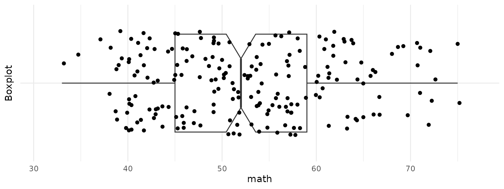
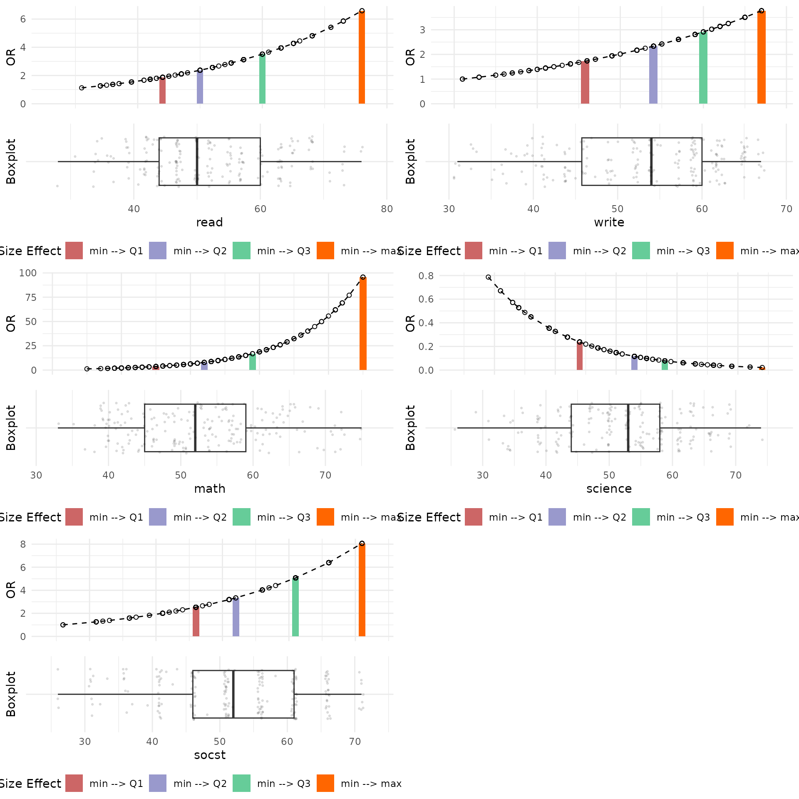
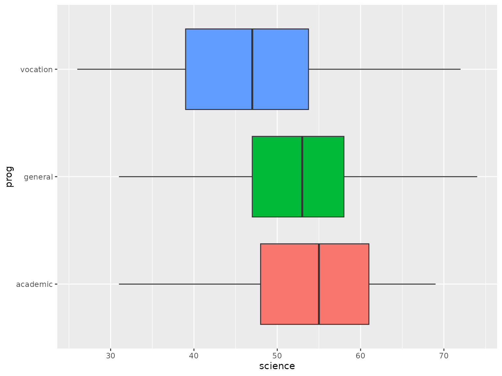

OddsRatioVisualizer
Aleksandr Tsybakin1
Vadim Tyuryaev2
Jane Heffernan3
Hanna Jankowski4
Kevin McGregor5
OddsRatioVisualizer.RmdEXAMPLES
1. Data
We will use the Career choice of high school students
(hsb) dataset from the faraway package to
demonstrate how plot_OR function works and
how it can be customized. This dataset contains 200 observations with 11
factors related to students’ physical characteristics as well as their
study performance. More details on this dataset can be found in
the official documentation.
# Get program choice of high school students data
hsb_data = faraway::hsb
head(hsb_data)
#> id gender race ses schtyp prog read write math science socst
#> 1 70 male white low public general 57 52 41 47 57
#> 2 121 female white middle public vocation 68 59 53 63 61
#> 3 86 male white high public general 44 33 54 58 31
#> 4 141 male white high public vocation 63 44 47 53 56
#> 5 172 male white middle public academic 47 52 57 53 61
#> 6 113 male white middle public academic 44 52 51 63 612. Function
Let’s fit a GLM model with binomial family and logistic link function
to explore which factors affect the Odds of selecting an
academic program versus non-academic ones
(general or vocation).
# Remove id column
hsb_data = subset(hsb_data, select=-c(id))
# Fit a glm model with binary family on all variables
glm_object=glm(I(prog == "academic") ~ gender + math + read + write + science
+ socst + schtyp + ses + race,
family=binomial(link="logit"),
data=hsb_data)
summary(glm_object)
#>
#> Call:
#> glm(formula = I(prog == "academic") ~ gender + math + read +
#> write + science + socst + schtyp + ses + race, family = binomial(link = "logit"),
#> data = hsb_data)
#>
#> Coefficients:
#> Estimate Std. Error z value Pr(>|z|)
#> (Intercept) -6.17122 1.59304 -3.874 0.000107 ***
#> gendermale 0.18406 0.39450 0.467 0.640817
#> math 0.10861 0.03148 3.450 0.000560 ***
#> read 0.03928 0.02753 1.427 0.153550
#> write 0.03687 0.02915 1.265 0.205914
#> science -0.07976 0.02876 -2.773 0.005549 **
#> socst 0.04639 0.02383 1.947 0.051568 .
#> schtyppublic -1.16549 0.50968 -2.287 0.022214 *
#> seslow -0.65253 0.53904 -1.211 0.226070
#> sesmiddle -0.90990 0.43239 -2.104 0.035350 *
#> raceasian -0.75657 0.98584 -0.767 0.442820
#> racehispanic 0.36016 0.72792 0.495 0.620751
#> racewhite -0.27162 0.63372 -0.429 0.668206
#> ---
#> Signif. codes: 0 '***' 0.001 '**' 0.01 '*' 0.05 '.' 0.1 ' ' 1
#>
#> (Dispersion parameter for binomial family taken to be 1)
#>
#> Null deviance: 276.76 on 199 degrees of freedom
#> Residual deviance: 197.85 on 187 degrees of freedom
#> AIC: 223.85
#>
#> Number of Fisher Scoring iterations: 53. Visualization
Below are several examples how plot_OR function can be utilized.
3.1 Default Plots
The default visualization produced by the plot_OR function includes two plots placed side-by-side:
- A bar plot illustrating the dependency of the Realized Size Effect on the Odds Ratio, displayed at the top of the output figure.
- A box plot representing the distribution of data points for a given variable, displayed at the bottom of the output figure.
In order to get these visuals the following should be passed to the plot_OR function:
- Fitted GLM or GLMNET object with a binary family.
- Data that was used to fit the GLM/GLMNET object.
- Variable name that the plots should be built for.
Example of the default side-by-side visualization for the math variable is shown below.
# Default side by side example for one variable
plot_OR(glm_object, hsb_data, var_name="math")$"SidebySide"
Also, we can get each plot separately using the dollar sign operator as exemplified below.
# Default barplot example for one variable
plot_OR(glm_object, hsb_data, var_name="math")$"BarPlot"
# Default boxplot example for one variable
plot_OR(glm_object, hsb_data, var_name="math")$"BoxPlot"
3.2 Customization
Now let’s take a look on how the plot_OR figures can be
customized. One possible customization is to change colors of bars in
Bar plot. We can specify what colors to use by passing a vector with 4
colors as a color_filling parameter. The default colour
settings are grey.colors(4, start=0.1, end=0.9).
# Customize graph through layers and color parameter
or_plots = plot_OR(glm_object, hsb_data, var_name="math",
color_filling=c("#CC6666", "#9999CC","#66CC99","#FF6600"))Also, we can modify both Bar plot and Box plot by explicitly varying the parameters of the correspondent layers. Below are examples of how the layers look like.
# Get Barplot layers
or_plots$"BarPlot"$layers
#> [[1]]
#> mapping: x = ~.data[["x"]], y = ~.data[["y"]], fill = ~.data[["fct"]]
#> geom_bar: just = 0.5, width = 2.1, na.rm = FALSE, orientation = NA
#> stat_identity: na.rm = FALSE
#> position_stack
#>
#> [[2]]
#> mapping: x = ~.data[["x"]], y = ~.data[["y"]]
#> geom_line: na.rm = FALSE, orientation = NA
#> stat_identity: na.rm = FALSE
#> position_identity
#>
#> [[3]]
#> mapping: x = ~.data[["x"]], y = ~.data[["y"]]
#> geom_point: na.rm = FALSE
#> stat_identity: na.rm = FALSE
#> position_identity
# Get boxplot layers
or_plots$"BoxPlot"$layers
#> [[1]]
#> geom_boxplot: outliers = TRUE, outlier.colour = NULL, outlier.fill = NULL, outlier.shape = 19, outlier.size = 1.5, outlier.stroke = 0.5, outlier.alpha = NULL, notch = TRUE, notchwidth = 0.5, staplewidth = 0, varwidth = FALSE, na.rm = FALSE, orientation = NA
#> stat_boxplot: na.rm = FALSE, orientation = NA
#> position_dodge2
#>
#> [[2]]
#> geom_point: na.rm = FALSE
#> stat_identity: na.rm = FALSE
#> position_jitterFor instance, to adjust the width of the bars in a bar plot, one can
explicitly modify the value of the width parameter within
the geom_params list in the first layer of the bar plot. The
first layer corresponds to the actual bar plot (geom_bar), the
second layer pertains to the line passing through the tops of the bars
(geom_line), and the third layer relates to the scatter points
on that line (geom_point).
Similarly, to create a regular box plot (without a notch) and adjust
the size and transparency of the data points, one can set the
notch parameter to FALSE in the
geom_params list of the first layer and modify the size and
alpha parameters in the aes_params list of the second
layer. The first layer of the box plot pertains to the actual box plot
(geom_boxplot), while the second layer corresponds to the
scatter of data points (geom_point).
Once the customization is finished, the plots can be visualized side-by-side using ggarrange() function as shown below.
# Change size of bars in the barplot
or_plots$"BarPlot"$layers[[1]]$geom_params$width = 1
# Change the boxplot type
or_plots$"BoxPlot"$layers[[1]]$geom_params$notch = FALSE
# Change size and transparency of points in the boxplot
or_plots$"BoxPlot"$layers[[2]]$aes_params$size = 0.5
or_plots$"BoxPlot"$layers[[2]]$aes_params$alpha = 0.1
# Plot both graphs together
ggarrange(or_plots$"BarPlot", or_plots$"BoxPlot", ncol=1, nrow=2,
common.legend=TRUE, legend="bottom")
3.3 Multiple Plots
Now we will take a look at an example on how OR plots can be visualized for multiple variables from the dataset. We will use the same customized style from above examples. We will define a special function (customized_plots()) to customize the plotting parameters following the example above.
customized_plots = function(or_plots) {
# Change size of bars in the barplot
or_plots$"BarPlot"$layers[[1]]$geom_params$width = 1
# Change the boxplot type
or_plots$"BoxPlot"$layers[[1]]$geom_params$notch = FALSE
# Change size and transparency of points in the boxplot
or_plots$"BoxPlot"$layers[[2]]$aes_params$size = 0.5
or_plots$"BoxPlot"$layers[[2]]$aes_params$alpha = 0.1
or_plots = ggarrange(or_plots$"BarPlot", or_plots$"BoxPlot", ncol=1, nrow=2,
common.legend=TRUE, legend="bottom")
return(or_plots)
}Example below shows how side-by-side plots can be visualized for all
numeric variables from the dataset using arrangeGrob() and
grid.arrange(). Please note: the fig.height and
fig.width parameter of the knitr chunk should be adjusted
to make the visuals dispaly properly.
# Select continuous variables
continuous_vars = hsb_data %>%
select_if(is.numeric)
# Create a list to store all plots
plot_list = list()
# Store side by side graphs for all numeric variables
for (name in colnames(continuous_vars)) {
# Customize graph through layers and color parameter
or_plots = plot_OR(glm_object, hsb_data, var_name=name,
color_filling=c("#CC6666", "#9999CC","#66CC99","#FF6600"))
# Plot both graphs together
plot_list[[name]] = customized_plots(or_plots)
}
# Plot all graphs in one matrix
plot_grob = arrangeGrob(grobs=plot_list)
grid.arrange(plot_grob)
A few observations from these plots are that the distribution of Reading Scores is right-skewed, and that an increase in Reading Scores results in a higher Odds Ratio, indicating a positive effect. Additionally, the effect of the difference between the First Quartile (Q1) and the Minimum Reading Scores shows a change of nearly 2 units in the Odds Ratio, while the difference between the Third Quartile (Q3) and the Minimum Reading Scores exhibits a change of approximately 3.75 units in the Odds Ratio.
Conversely, Science Scores demonstrate a negative effect on Odds Ratio values. A possible explanation for this observation is that students with high Science Scores possess strong technical knowledge and skills, which they further develop and apply in vocational programs during high school.
Let’s take a look at Odds Ratio plots for GLM functions fitted for general and vocation programs.
# Select continuous variables
continuous_vars = hsb_data %>%
select_if(is.numeric)
# Create a list to store all plots
plot_list = list()
# Define program names and target variable
prog_names = c("academic", "general", "vocation")
var_name = "science"
# Get Odds Ratio plots for Science variable for functions fitted for different programs
for (name in prog_names) {
# Fit a new GLM function for general and vocation programs
if (name != "academic") {
cur_glm_object = glm(I(prog == name) ~ gender + math + read + write + science
+ socst + schtyp + ses + race,
family=binomial(link="logit"),
data=hsb_data)
} else {
cur_glm_object = glm_object
}
or_plots = plot_OR(cur_glm_object, hsb_data, var_name=var_name,
color_filling=c("#CC6666", "#9999CC","#66CC99","#FF6600"))
or_plots$"BarPlot" = or_plots$"BarPlot" + ggtitle(name)
plot_list[[name]] = customized_plots(or_plots)
}
# Plot all graphs in one matrix
plot_grob = arrangeGrob(grobs=plot_list)
grid.arrange(plot_grob)
The plots above indicate that an increase in Science Scores positively influences the selection of either general or vocational programs. Notably, when examining the distribution of Science Scores across different programs (as shown in the boxplot below), it is evident that students opting for the academic program possess higher Science Scores compared to those choosing general or vocational programs. This observation suggests that students with higher Science Scores may prefer non-academic programs because their academic skills are already well-developed, or they seek to acquire additional skills related to science available through vocational or general programs.
# Boxplot for Science Scores factorized by high school programs
ggplot(hsb_data, aes(x=science, y=prog, fill=prog)) +
geom_boxplot() + theme(legend.position="none")